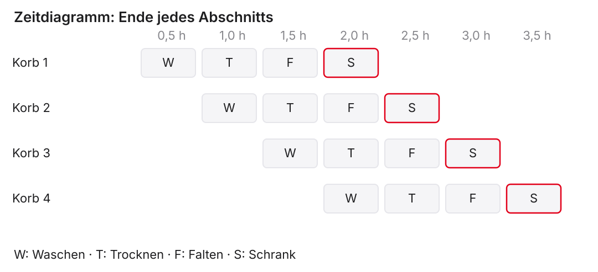
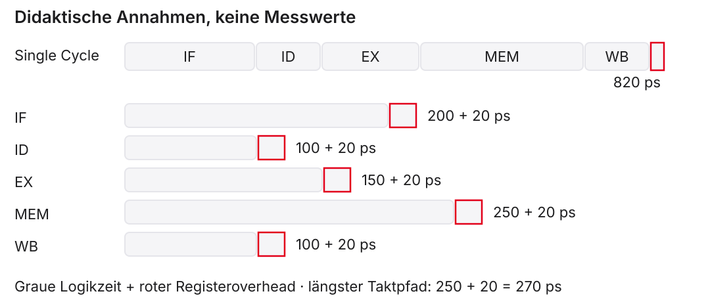
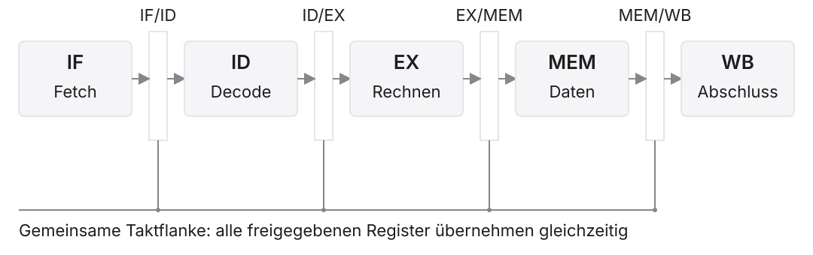
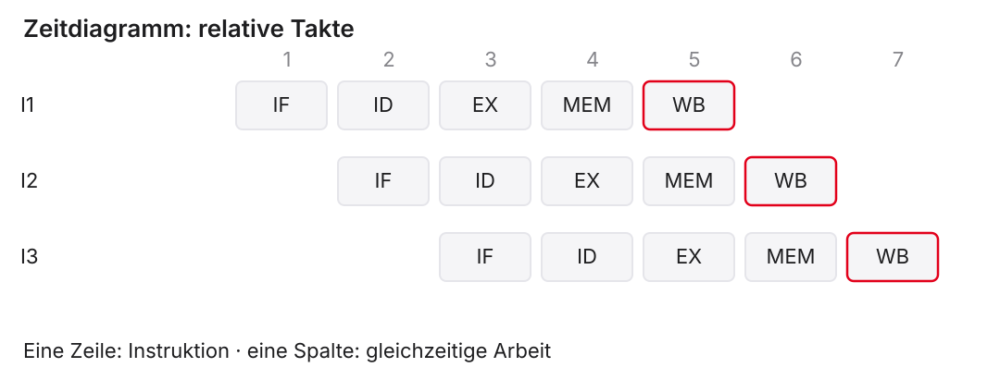
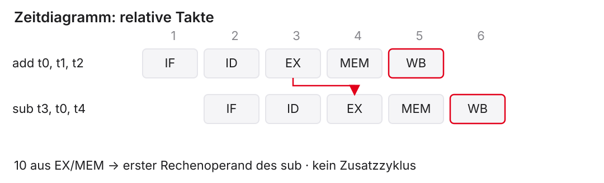
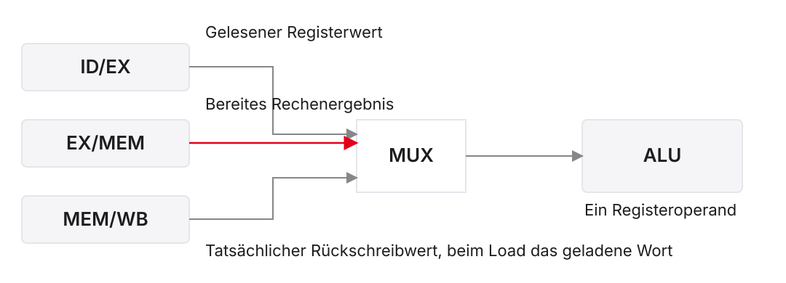
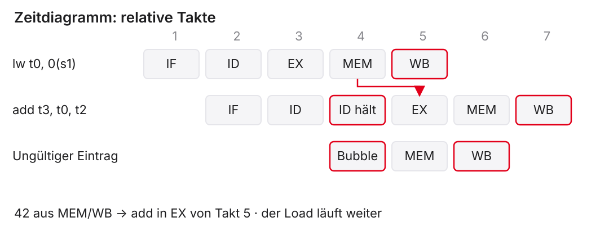
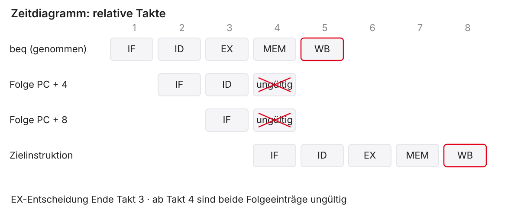
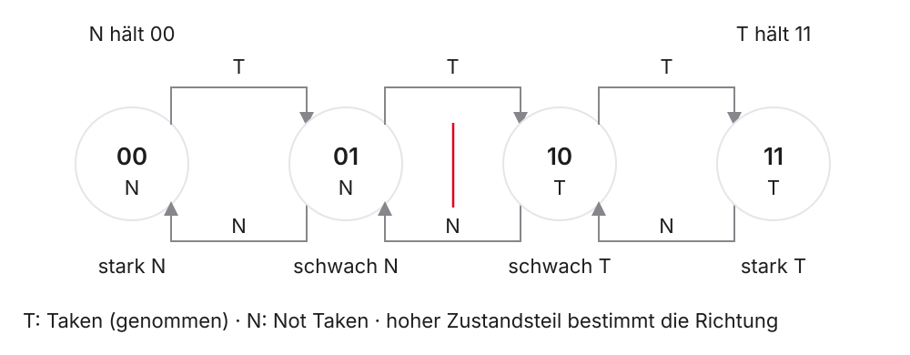

Mikrocomputertechnik 1
Einheit 7: Performance und Pipelining
Performance und Pipelining
Fünf Stufen – fünfmal so schnell?
- Single-Cycle-Datenpfad aus Einheit 5: \(T_\mathrm{clk}\geq7{,}3\,\mathrm{ns}\)
- Nun trennen Register die Bereiche IF, ID, EX, MEM und WB
Wie schnell ist danach …
- ein einzelner
lw? - eine lange Befehlsfolge?
| A | B | C | D |
|---|---|---|---|
| etwa fünfmal so schnell | schneller, aber weniger als fünfmal | gleich schnell | langsamer |
Was Sie heute erklären können sollen
- Laufzeit aus Befehlszahl, Takten und Taktperiode bestimmen
- Ein Pipeline-Zeitdiagramm lesen und selbst ergänzen
- Verfügbare Ergebnisse rechtzeitig weiterleiten
- Nötiges Warten von verworfener Arbeit unterscheiden
- Dieselbe Arbeit durch zulässiges Umsortieren beschleunigen
Anschluss an Einheit 1–6
| Bekannt | Neue Frage |
|---|---|
| Register übernehmen Werte an der Flanke | Welche Instruktion besitzt den gespeicherten Wert? |
| Quellenwahl und Schreibfreigabe | Wie reisen Daten und Steuerung gemeinsam? |
| Load, Store und Branch | Wann liegen Daten und nächstes Ziel vor? |
| Assembler und Maschinenbefehle | Welche Befehle zählen für die Laufzeit? |
Vereinbarung für alle Zeitdiagramme
- Fünf Stufen, in Programmreihenfolge, höchstens ein neuer Befehl je Takt
- Getrennte Zugriffe auf Befehls- und Datenspeicher
- Ein Speicherzugriff braucht im Modell eine Stufe
- Takt 1 beginnt beim Fetch der betrachteten Kernfolge
- Gezählt wird bis zum Ende der letzten Abschlussstufe
Vereinbarung für Abhängigkeiten und Sprünge
- Forwarding aus EX/MEM und MEM/WB für bereite Werte
- Unmittelbare Load-Nutzung in EX: ein Wartezyklus
- Branch-Entscheidung in EX, zunächst sequenzieller Fetch
- Genommener Branch: zwei jüngere Einträge verwerfen
- Andere Ripes-Konfigurationen können andere Zeitdiagramme haben
1. Laufzeit, Latenz und Durchsatz
Was zählt als Befehlszahl?
- Dynamisch abgeschlossene Maschineninstruktionen zählen
- Schleifen können dieselbe Instruktion mehrfach ausführen
- Pseudoinstruktionen können mehrere Maschinenbefehle ergeben
- Hardware-Bubbles und verworfene Befehle zählen nicht zu \(N\)
Drei Größen bestimmen die Laufzeit
\[t_\mathrm{CPU}=N\cdot \mathrm{CPI}\cdot T,\qquad \mathrm{CPI}=\frac{C}{N},\qquad f=\frac{1}{T}\]
- \(N\): dynamisch abgeschlossene Instruktionen
- \(C\): benötigte Taktzyklen
- \(T\): Taktperiode, \(f\): Taktfrequenz
- Gleiche Aufgabe und gleiche Zählgrenzen vergleichen
Rechnen: Ein kürzerer Takt genügt nicht
Didaktisches Beispiel für dieselbe Aufgabe, \(N=1000\):
| Variante | CPI | Taktperiode | Laufzeit |
|---|---|---|---|
| A | \(1\) | \(2\,\mathrm{ns}\) | \(2\,\mathrm{\mu s}\) |
| B | \(1{,}5\) | \(1\,\mathrm{ns}\) | \(1{,}5\,\mathrm{\mu s}\) |
\[S=\frac{t_A}{t_B}\approx 1{,}33\]
Vier Stationen, vier Aufträge
- Vier Körbe, je vier Arbeitsschritte mit 30 Minuten
- Jede Station bearbeitet höchstens einen Korb gleichzeitig
- Kein zusätzlicher Aufwand zwischen den Stationen
- Ohne Überlappung: \(4\cdot4\cdot30\,\mathrm{min}=8\,\mathrm{h}\)
Überlappung im Zeitdiagramm

Latenz und Durchsatz getrennt beantworten
| Größe | Bedeutung | Waschsalon |
|---|---|---|
| Latenz | Dauer eines einzelnen Auftrags | \(2\,\mathrm{h}\) |
| Stationärer Durchsatz | Abschlüsse je Zeit bei laufendem Band | \(2\) Körbe je Stunde |
| Gesamtzeit | Dauer der betrachteten Folge | \(3{,}5\,\mathrm{h}\) |
Eine Prozessorpipeline kann die Einzellatenz auch erhöhen.
Angenommene Laufzeiten des Datenpfads

Ein Befehl kann länger unterwegs sein
\[L_\mathrm{single}=820\,\mathrm{ps},\qquad L_\mathrm{pipe}=5\cdot270\,\mathrm{ps}=1350\,\mathrm{ps}\]
- Single Cycle: ein langer Takt
- Pipeline: fünf kürzere Takte
- Der Vorteil muss aus mehreren überlappten Befehlen entstehen
Warum \(N+4\) Takte?
Für eine leere fünfstufige Pipeline ohne Zusatzzyklen:
\[C=N+5-1=N+4,\qquad \mathrm{CPI}_\mathrm{endlich}=1+\frac{4}{N}\]
- Erster Abschluss nach fünf Takten
- Danach ein weiterer Abschluss je Takt
- Füllung und Leerung gemeinsam einmal berücksichtigen
Vergleich für zwanzig Instruktionen
\[t_\mathrm{single}=20\cdot820\,\mathrm{ps}=16400\,\mathrm{ps}\]
\[t_\mathrm{pipe}=24\cdot270\,\mathrm{ps}=6480\,\mathrm{ps}\]
\[S=\frac{16400}{6480}\approx2{,}53\]
Für sehr große \(N\): \(S\rightarrow820/270\approx3{,}04\).
Kurzaufgabe: Was sagt CPI allein?
Zwei Ausführungen derselben Aufgabe:
- A: \(\mathrm{CPI}=1\), \(T=820\,\mathrm{ps}\)
- B: \(\mathrm{CPI}=1{,}2\), \(T=270\,\mathrm{ps}\)
- Beide schließen zwanzig Instruktionen ab
Welche Ausführung ist schneller? Begründen Sie Ihre Antwort.
2. Die fünf Stufen und ihre Register
Aufgaben der fünf Stufen
| Stufe | Aufgabe |
|---|---|
| IF — Instruction Fetch | Maschinenbefehl holen |
| ID — Instruction Decode | Decodieren, Register lesen, Steuerung bilden |
| EX — Execute | Rechnen, Adresse oder Branch bestimmen |
| MEM — Memory Access | Gegebenenfalls Daten lesen oder schreiben |
| WB — Write Back | Gegebenenfalls Register schreiben, Abschluss |
Register machen aus Bereichen Taktstufen

Daten und Steuersignale gehören zusammen
Für einen Store im Paket:
- Zieladresse und zu schreibender Registerwert
MemWriteals Speicher-Schreibfreigabe- Zugehöriger Befehls-PC und Gültigkeit
- Freigabe aus ID wandert bis zum Store in MEM
Ein Zeitdiagramm in zwei Richtungen lesen

Drei Arten von Konflikten
| Konflikt | Frage | Beispiel / Behandlung |
|---|---|---|
| Structural Hazard | Reicht die Ressource gleichzeitig? | Ein Speicherport / getrennte Zugriffe |
| Data Hazard | Ist der benötigte Wert bereit? | Registerabhängigkeit / Forwarding oder Stall |
| Control Hazard | Gehört die Folge zum richtigen Pfad? | Branch / Vorhersage und Flush |
3. Registerabhängigkeiten und Forwarding
Ein konkretes Produzent-Verbraucher-Paar
Anfang: t1 = 7, t2 = 3, t4 = 4, alter t0 = 99.
\[t0=7+3=10,\qquad t3=10-4=6\]
Die Quelle t0 muss den neuen Wert liefern.
Der ungeänderte Ablauf würde zu früh lesen
| Befehl | 1 | 2 | 3 | 4 | 5 | 6 |
|---|---|---|---|---|---|---|
add |
IF | ID | EX | MEM | WB | |
sub |
IF | ID | EX | MEM | WB |
subliest in ID von Takt 3 zunächst den alten Registerwertaddschreibt erst in WB von Takt 5- Das Problem betrifft den Operandenwert, nicht die Befehlsreihenfolge
Warten ohne Forwarding
Im Kursmodell wird der neue Registerwert erst im Folgetakt lesbar:
| Befehl | 1 | 2 | 3 | 4 | 5 | 6 | 7 | 8 | 9 |
|---|---|---|---|---|---|---|---|---|---|
add |
IF | ID | EX | MEM | WB | ||||
sub |
IF | ID | ID hält | ID hält | ID liest | EX | MEM | WB |
Drei Zusatzzyklen. Bei Schreiben und Lesen im selben Takt wären es zwei.
Das Ergebnis existiert schon vor WB

Registerwerte vor dem Recheneingang

Wann darf ein Ergebnis weitergeleitet werden?
Für jede tatsächlich benutzte Registerquelle prüfen:
- Produzent ist gültig und hat
RegWrite = 1 - Sein
rdist ungleichx0 - Sein
rdpasst zur Quellenregisternummer - Das benötigte Ergebnis ist rechtzeitig verfügbar
- Kein jüngerer passender Produzent hat Vorrang
Zwei Treffer: Der jüngere Produzent gewinnt
Anfang: t1 = 7, t2 = 3, t4 = 4.
Beim sub in EX: addi in MEM, add in WB.
Nullregister: Ein Treffer ist noch kein Datenfluss
Anfang: t1 = 7, t2 = 3, t4 = 4.
Welche Zahl muss sub als ersten Operanden erhalten?
Sonderfall: WB und ID im selben Takt
Anfang: t0=99, t1=7, t2=3, t4=4, a5=0.
- In Takt 5: I1 in WB, I4 in ID
- Neuer
t0-Wert im Kursmodell erst in ID von Takt 6 lesbar - EX-Forwarding allein schließt diese Lücke nicht
Ein Haltezyklus löst den WB/ID-Konflikt
| Eintrag / Takt | 1 | 2 | 3 | 4 | 5 | 6 | 7 | 8 | 9 |
|---|---|---|---|---|---|---|---|---|---|
I1: add |
IF | ID | EX | MEM | WB | ||||
I2: addi |
IF | ID | EX | MEM | WB | ||||
I3: xor |
IF | ID | EX | MEM | WB | ||||
I4: sub |
IF | ID alt | ID neu | EX | MEM | WB | |||
| Bubble | EX | MEM | WB |
ID alt: t0=99. Nach einem Takt Halt: ID neu mit t0=10; Ergebnis t3=6.
4. Load-Use, Stall und Scheduling
Ein Load liefert zunächst nur eine Adresse
Anfang: s1 zeigt auf ein gültiges Wort mit Wert 42, t2 = 8.
- EX des Loads: Adresse aus Basis plus Offset
- MEM des Loads: Wort aus dem Datenspeicher
- Benötigtes Additionsergebnis: \(42+8=50\)
Ein Wartezyklus macht den Wert rechtzeitig nutzbar

Was der Stall hält und was weiterläuft
An der betroffenen Taktgrenze:
| Teil | Aktion |
|---|---|
| PC | Fetch-Adresse halten |
| IF/ID | Verbraucher in ID halten |
| ID/EX | Ungültige Bubble einsetzen |
| EX/MEM und MEM/WB | Ältere Instruktionen weiterlaufen lassen |
Bubble ist kein zusätzlicher NOP-Befehl
| Hardware-Bubble | Programm-NOP |
|---|---|
| Ungültiger / wirkungsloser Pipeline-Eintrag | addi x0, x0, 0 |
| Keine bestätigte Instruktion | Echter Maschinenbefehl |
| Erhöht nicht \(N\) | Zählt bei Ausführung zu \(N\) |
| Darf keine Zustandswirkung haben | PC schreitet normal fort |
Load-Use-Erkennung prüft benutzte Quellen
- In EX steht ein gültiger Load mit Ziel
rdungleichx0 - In ID steht der mögliche Verbraucher
- Sein tatsächlich benutztes
rs1oderrs2passt zurd - Dieser Wert wird schon in der nächsten EX-Stufe gebraucht
Papieraufgabe: Drei Befehle eintragen
Anfang: a0 zeigt auf ein Wort mit Wert 42.
- Zeichnen Sie das Raster bis zum letzten WB
- Markieren Sie gehaltene Stufen und die Bubble
- Benennen Sie beide Quellen des letzten
addin EX
Scheduling verschiebt vorhandene Arbeit
Dieselben drei nötigen Befehle, a5 startet bei null:
| A: ein Load-Use-Stall | B: unabhängige Arbeit dazwischen |
|---|---|
lw t0, 0(s1) |
lw t0, 0(s1) |
add a0, t0, t0 |
addi a5, a5, 1 |
addi a5, a5, 1 |
add a0, t0, t0 |
Ergebnisse jeweils: t0 = 42, a0 = 84, a5 = 1.
Scheduling: Wann ist die Umordnung unzulässig?
Darf addi s1, s1, 4 vor den Load rücken?
5. Sprünge, Flush und Vorhersage
Was muss für den Branch bekannt sein?
\[\mathrm{taken}=\mathrm{Branch}\land\mathrm{Zero}\]
\[\mathrm{Zieladresse}=PC_\mathrm{Branch}+\mathrm{Byteoffset}\]
- Vergleich und Zielrechnung in EX
- Sonst sequenziell \(PC_\mathrm{Branch}+4\)
Bis zur Entscheidung wird sequenziell geholt

Flush muss Zustandswirkungen verhindern
Anfang: t0 = t1 = 1, t2 = 77, t3 = 0, Speicherwort null.
Am Ziel abgeschlossen: Speicherwort 0, t3 = 0, a0 = 7.
Halten und Verwerfen lösen verschiedene Probleme
| Stall | Flush |
|---|---|
| Befehl gehört zur richtigen Ausführung | Jüngerer Befehl gehört zum falschen Pfad |
| Befehl bleibt erhalten | Befehl wird ungültig |
| Benötigte Daten noch nicht bereit | Kontrollfluss war anders als angenommen |
| Später weiterarbeiten | Keine bestätigte Zustandswirkung |
Zwei verlorene Abschlussslots im EX-Modell
Zwei gültige Instruktionen: genommener Branch und Zielinstruktion.
\[C_\mathrm{ohne\ Konflikt}=2+4=6\]
\[C_\mathrm{mit\ Flush}=2+4+2=8\]
Nicht genommener Branch: keine zusätzliche Kontrollflusskorrektur.
Kosten einer längeren Folge berechnen
Nicht überlappende Zusatzkosten des Lehrmodells:
\[C=N+4+H+2F\]
\[\mathrm{CPI}=\frac{C}{N}=1+\frac{4}{N}+\frac{H}{N}+2\frac{F}{N}\]
- \(H\): Anzahl zusätzlicher Wartezyklen
- \(F\): Anzahl Fehlannahmen mit je zwei Korrekturzyklen
Rechenbeispiel mit Wartezyklen und Branches
Didaktische Annahmen: \(N=100\), \(H=10\), zwanzig Branches, davon zwölf genommen, sequenzieller Fetch.
\[F=12,\qquad C=100+4+10+2\cdot12=138\]
\[\mathrm{CPI}=1{,}38,\qquad t=138\cdot270\,\mathrm{ps}=37260\,\mathrm{ps}\]
Früher vergleichen verändert das Modell
- Vergleich und Zielrechnung schon in ID
- Mit bereiten Werten: nur eine jüngere Folgeinstruktion
- EX-Forwarding kommt für einen ID-Vergleich zu spät
- Neue Datenwege, mögliche Stalls und Taktgrenze mitprüfen
Statische Vorhersage: Eine feste Regel
- Not Taken: immer zunächst die sequenzielle Folge holen
- Backward Taken, Forward Not Taken: Rückwärtssprung bevorzugen
- Ein Schleifenbranch bleibt beim letzten Durchlauf rückwärts gerichtet
- Richtungsvorhersage und verfügbare Zieladresse sind getrennte Fragen
Dynamische Vorhersage: Ein Bit mit Anfangszustand
Ein isolierter Branch, keine Tabellenteilung, Startvorhersage N:
| Ausführung | 1 | 2 | 3 | 4 |
|---|---|---|---|---|
| Tatsächlich | T | T | T | N |
| Vorhergesagt | N | T | T | T |
| Fehler? | ja | nein | nein | ja |
Nach jeder Entscheidung wird die nächste Vorhersage aktualisiert.
Vertiefung: Zwei Bit dämpfen einen Einzelwechsel

Vorläufige Arbeit braucht eine sichere Korrektur
- Früher Fetch kann sich auf eine Vorhersage stützen
- Beim Branch wird die Annahme geprüft
- Falsche jüngere Arbeit darf keinen Architekturzustand bestätigen
- Trefferquote allein bestimmt die Laufzeit noch nicht
6. Vom Papier zu Ripes
Eine Beobachtung nachvollziehbar dokumentieren
- Version und RV32-Modell mit Forwarding und Hazard-Erkennung notieren
- Komprimierte Instruktionen ausschalten, vor jedem Versuch zurücksetzen
- Maschinenbefehle und Kernmarke identifizieren
- Einzelne Clock-Schritte und verfügbare Stufentabelle verwenden
- Datenquelle, Wert, Gültigkeit und Endzustand vergleichen
Drei Kernversuche und ihre Sollwerte
Repository-Programm unter beispiele/ |
Funktionale Erwartung |
|---|---|
vl7_forwarding.s |
t2 = 150, a0 = 100 |
vl7_loaduse.s |
t0 = 42, a0 = 84 |
vl7_flush.s |
Speicherwort 0, t3 = 0, a0 = 7 |
Erst die passenden Befehle abschließen lassen, dann Registerwerte ablesen.
Fairer Vergleich der Scheduling-Dateien
vl7_schedule_a.s und vl7_schedule_b.s:
- Gleiche drei Kerninstruktionen und gleiche Endwerte
- Modell A: \(3+4+1=8\) Takte
- Modell B: \(3+4=7\) Takte
- Gleiche Taktperiode: Kern-Speedup \(8/7\approx1{,}14\)
Übungsblatt: Sensorknoten mit vier Kernbefehlen, neun bzw. acht Takte.
Selbstkontrolle vor Übung und Quiz
- Welche Größe misst eine einzelne Instruktionsdauer?
- Warum kann ein höherer CPI trotzdem zur kürzeren Laufzeit führen?
- Welcher Wert liegt nach EX eines Loads vor?
- Was bleibt beim Stall erhalten, was wird beim Flush ungültig?
- Welche Bedingungen machen Scheduling zulässig?